Welcome!
I am Haoyu Wei. My passion lies in the architecture of search, ads, and recommender systems, with a sharp focus on refactoring, performance tuning, Retrieval-Augmented Generation (RAG), and CUDA kernel development.
If my profile resonates with you, feel free to reach me at +86 134 6570 0709. My core belief: learn by doing.
Background
Work History
• ByteDance
Shanghai | Oct 2024 – Mar 2025 Recommendation Architecture Engineer
Ranking performance optimization & business support
• Tencent
Shenzhen | Mar 2025 – Jun 2025 Advertising Engine Engineer
End-to-end RPC refactor/migration & DAG mechanism development
• Microsoft
Suzhou | Jun 2025 – Present Bing Search Engineer
OPE (Outstanding-Personal-Entrepreneur)
Educaion
• Shanghai Jiao Tong University M.S. in Computer Science | Sep 2023 – Mar 2026 (expected)
• Hefei University of Technology B.Eng. in Communication Engineering | Sep 2019 – Jun 2023
Publication
• Haoyu Wei, Jingyu Ke, Ruibang Liu, and Guoqiang Li. ZK-ProVer: Proving Programming Verification in Non-Interactive Zero-Knowledge Proofs. In Proceedings of the 27th International Conference on Formal Engineering Methods (ICFEM'25)
Competitions & Honors
• 3rd Place, OceanBase Vector Database Development Challenge – Shanghai
• Elite Talent, Tencent Rhino-Bird Open-Source Program
• 1st Place, Alibaba Cloud Tianchi Development Competition
点击返回🔗我的博客文章目录
- 目录 {:toc}
3TS

数据库中执行一致性测试
1. PostgreSQL安装
1.1 下载 PostgreSQL 15 的源码

wget https://ftp.postgresql.org/pub/source/v15.0/postgresql-15.0.tar.gz
1.2 解压源码包
解压下载的源码包：
tar -xzvf postgresql-15.0.tar.gz
1.3 编译并安装 PostgreSQL
进入源码目录，执行以下命令进行编译和安装：
bash
cd postgresql-15.0
./configure
make
sudo make install
1.4 创建数据库用户和数据目录
sudo mkdir /usr/local/pgsql
sudo mkdir /usr/local/pgsql/data
sudo chown nlove /usr/local/pgsql/data
1.5 初始化数据库
初始化数据库:
/usr/local/pgsql/bin/initdb -D /usr/local/pgsql/data

1.6 启动 PostgreSQL 服务
启动 PostgreSQL 数据库服务：
/usr/local/pgsql/bin/pg_ctl -D /usr/local/pgsql/data -l logfile start

创建数据库 test：
/usr/local/pgsql/bin/createdb test
创建一个名为 test 的数据库。
连接到数据库 test：
/usr/local/pgsql/bin/psql test
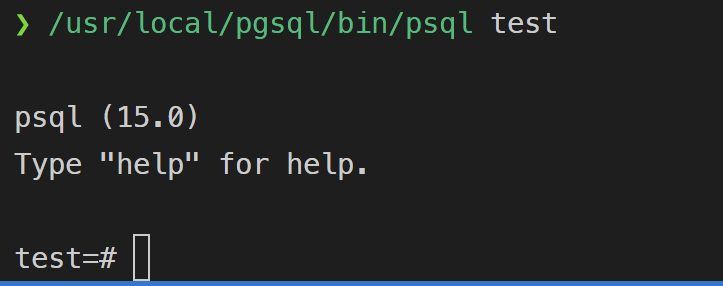
CREATE USER why WITH PASSWORD '123';
ALTER USER why CREATEDB;
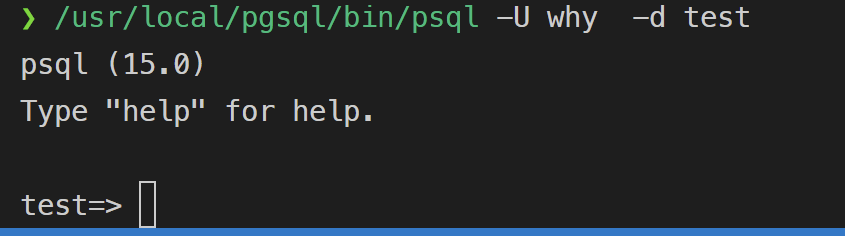
1.7 why用户赋予 CREATE 权限
GRANT CREATE ON SCHEMA public TO why;
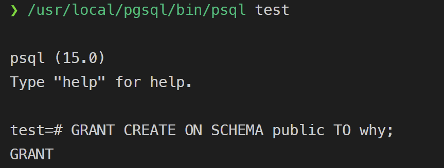
2. 安装 UnixODBC
sudo apt-get install unixodbc unixodbc-dev
odbcinst -j
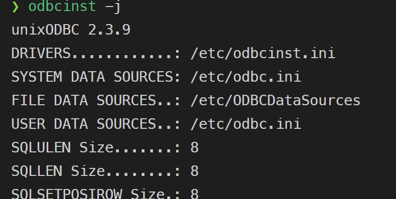
显示 ODBC 驱动程序和数据源配置文件的位置。
3. 配置 ODBC 数据源
编辑两个配置文件：/etc/odbcinst.ini 和 /etc/odbc.ini。
3.1 配置 /etc/odbcinst.ini
sudo nano /etc/odbcinst.ini
插入
[PostgreSQL]
Description = PostgreSQL ODBC Driver
Driver = /usr/lib/x86_64-linux-gnu/odbc/psqlodbcw.so
Setup = /usr/lib/x86_64-linux-gnu/odbc/libodbcpsqlS.so
FileUsage = 1
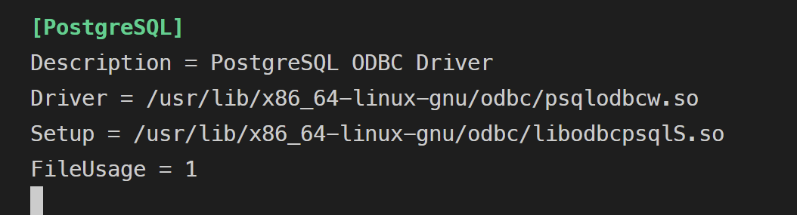
3.2 配置 /etc/odbc.ini
这个文件用于配置数据源名称 (DSN)，即指定你将要连接的 PostgreSQL 数据库。
sudo nano /etc/odbc.ini
[pg]
Description = PostgreSQL Database
Driver = PostgreSQL
Servername = localhost
Port = 5432
Database = test
Username = why
Password = 123
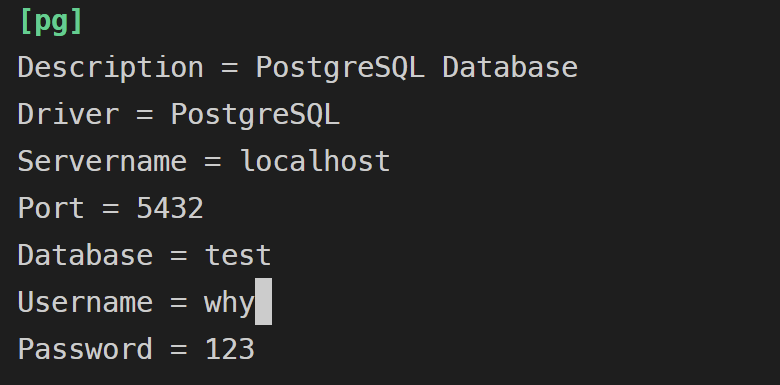
3.3 配置环境变量
确保 ODBCINI 和 ODBCSYSINI 环境变量被正确设置，这可以帮助 isql 工具找到配置文件。
export ODBCSYSINI=/etc
export ODBCINI=/etc/odbc.ini
3.4 测试
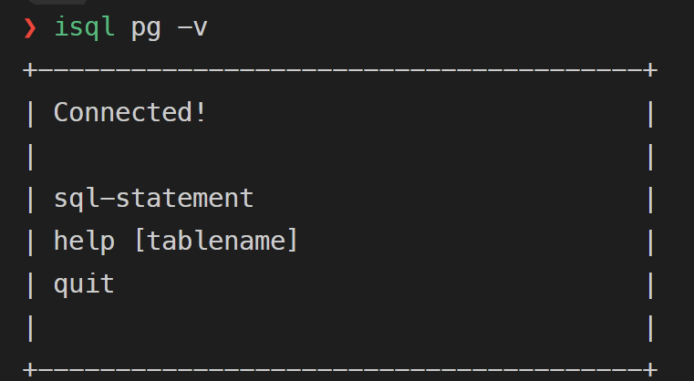
4. 测试一致性
修改auto_test.sh,user,password。

./auto_test.sh "pg" "read-uncommitted"
./auto_test.sh "pg" "read-committed"
./auto_test.sh "pg" "repeatable-read"
./auto_test.sh "pg" "serializable"

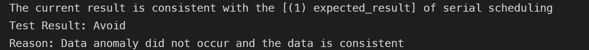
5. MYSQL同理
5.1 安装好mysql后,需要去官网安装mysql的obdc驱动
MySQL :: Download MySQL APT Repository
5.2 配置obdc数据源
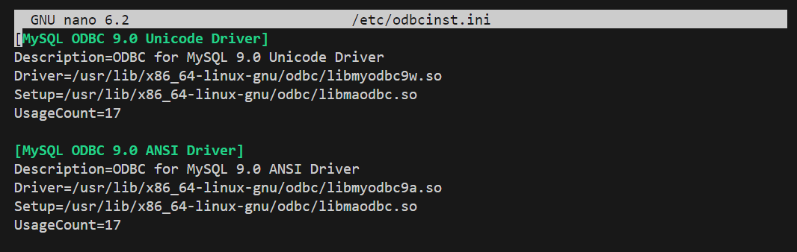
5.3 配置数据源名称
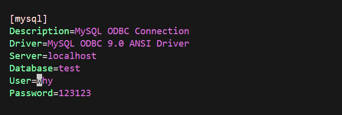
5.4 运行3ts测试 测试结果如下
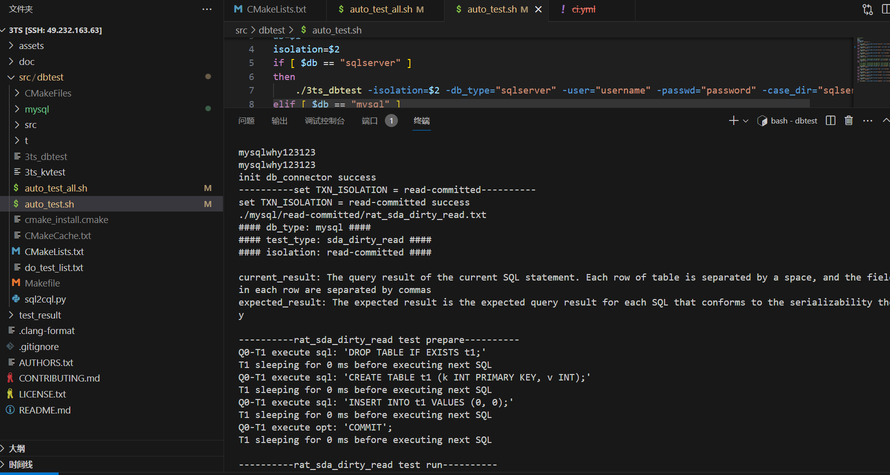
点击返回🔗我的博客文章目录
- 目录 {:toc}
paper link
1. Bigtable介绍
Google的 Bigtable 是一种分布式存储系统，专门用于管理结构化数据，具有高度的可扩展性。
在许多方面，Bigtable类似于数据库:它与数据库共享许多实现策略。bigtables不支持完整的关系数据模型，相反，它为客户端提供了一个简单的数据模型，该模型支持对数据布局和格式的动态控制，并允许客户端推断底层存储中表示的数据的局部属性。使用可以是任意字符串的行名和列名对数据进行索引。Bigtable模式参数允许客户端动态控制从内存中还是从磁盘中提供数据。
2. 数据模型
Bigtable是一个稀疏的、分布式的、持久的多维排序映射。映射由行键、列键和时间戳索引，映射中的每个值都是一个未解释的字节数组。
稀疏的：Bigtable 表格是稀疏的，意味着在表格中不需要为每个行和列都填充数据。只在需要的位置存储数据，这样可以节省存储空间。空白的单元格不会占用资源。
分布式的：Bigtable 是分布式的，它可以将数据存储在成千上万台服务器上，每个表格会被分割成多个“tablet”（子表），并分布在不同的服务器上。
持久的：Bigtable 保证数据持久化，即数据被存储后不会丢失，甚至在服务器故障或重启的情况下，数据依然是安全的。这通过底层的 Google 文件系统（GFS）来实现。
多维排序映射：Bigtable 将数据组织为一个多维的结构，其中数据通过行键、列键和时间戳来定位。这类似于一个三维的哈希表，不同的键为不同维度的数据提供索引。
行键：行键是表中每一行的唯一标识符。行键按字典序排列，使得 Bigtable 能高效地执行按行范围查询。
列键：列键用于标识每一行中不同的列数据，列按列族（column family）组织，使得列键具有分组的灵活性。
时间戳：Bigtable 中的每个单元格（即某一行键和列键交叉的地方）可以存储同一数据的多个版本，每个版本都有一个时间戳。通过时间戳，Bigtable 可以存储历史版本的数据，支持按时间查询。
未解释的字节数组：映射中的每个值实际上是一个字节数组。Bigtable 不关心这些字节的具体内容，它不提供对数据类型的解释，数据的解析留给应用程序处理。
三维索引（行键、列键、时间戳）访问数据：
(row:string, column:string, time:int64) → string
2.1 行键
Bigtable的行键是任意字符串。对单行键下数据的每次读取或写入都是原子的。
按字典顺序维护数据：
Bigtable 使用 rowkey 来对数据进行排序，并按照字典顺序进行存储。这样，数据行在存储时是按行键（rowkey）的字典序排列的。
行范围动态分区：
Bigtable 会动态将表格中的行划分为多个连续的范围，每个范围称为一个“tablet”。这些 tablet 是系统在集群中的分配和负载平衡的最小单位。随着数据的增加或访问负载的变化，系统可以自动调整 tablet 的大小和位置。
短范围读取的有效性：
因为数据是按行键的字典顺序存储的，所以当我们查询特定范围的数据时，系统只需要从相关的几个 tablet 中读取数据。这意味着短范围读取（例如按范围查询相邻的行）通常只需要与少量的机器通信。
利用行键来优化数据访问的局部性：
客户端可以根据应用的需求来选择合适的行键，以便将相关的数据存储在连续的位置上，这样可以提高数据访问的局部性。例如，在一个 Webtable 中，可以通过倒置 URL 的主机名（如将 maps.google.com 变为 com.google.maps）来确保同一个域名下的页面（如 maps.google.com/index.html）被存储在相邻的行中。
2.2 列键
列族（column families）：
列族是 Bigtable 数据存储的基本单元，每个列族中包含多个列键。列族是被分组在一起的数据集合，通常是数据类型相似的一组列。
访问控制：
Bigtable 在 列族级别 执行访问控制、磁盘和内存使用的管理。这意味着所有数据访问权限、资源管理都在列族级别进行，而不是单个列键级别。
列族的创建：
在向某个列族存储数据之前，必须先创建这个列族。一旦列族被创建，用户可以向该列族中添加任意的列键，也就是说列族创建后列键是动态的，不需要预定义。
列族数量有限：
虽然列键的数量是无穷大的（可以创建任意数量的列键），但列族的数量应该保持较小，通常在数百个以内。
限定符（qualifier） :
限定符是列键的一部分，负责标识具体的列。这可以帮助你在一个列族（column family）内区分多个列键。限定符是灵活的，可以是任意字符串，而列族名必须是可打印的字符。限定符允许同一个列族中存在多种不同类型的列键。
2.2.1 列族设计例子
假设有一个用户数据表，可以设计为：
列族A：存储用户的基本信息，比如用户名、年龄（这些信息类型相似，因此被压缩在一起）。
列族B：存储用户的社交信息，比如好友列表、点赞记录（同样类型相似的数据放在一起）。
每个列族中的列键（如用户名、年龄、好友列表等）可以是无限的，但这些列键必须在已经创建的列族下添加。
2.2.2 限定符设计例子
假设有一个存储网页数据的表格，列族是 anchor，表示网页上的超链接信息。这个列族可能包含许多不同的链接，每个链接来自不同的网站。这时，可以通过使用不同的限定符来标识这些链接。比如：
列族：anchor
限定符：example.com，google.com，yahoo.com
存储内容：各个链接的锚文本（也就是链接的显示文字）。
更具体地说：
anchor:example.com 存储了来自 example.com 指向当前页面的链接锚文本。
anchor:google.com 存储了来自 google.com 的锚文本
2.3 时间戳
多版本存储：
Bigtable 中的每个单元格可以存储同一数据的多个版本。
时间戳索引：
每个数据版本都使用一个 时间戳（timestamp） 作为索引。Bigtable 的时间戳是 64 位的整数，精度可以达到微秒级别。
自动分配：
Bigtable 可以自动生成时间戳，代表“实时”时间，单位为微秒。
手动分配：
应用程序也可以自己生成并分配时间戳，这样可以更灵活地控制版本。如果应用需要避免多个版本之间的冲突（比如多用户或多线程同时更新同一个单元格），应用程序需要确保生成唯一的时间戳。
按时间戳降序存储：
存储的数据版本按时间戳的降序排列，最新版本的数据会首先被读取。这意味着在查询单元格数据时，默认总是先获取最新的版本。
3. 构建模块
Google File System (GFS)：
Bigtable 使用 GFS 来存储日志和数据文件。GFS 是一个分布式文件系统，专为大规模数据存储设计。Bigtable 将其日志文件和数据文件存储在 GFS 中。
集群管理系统：
Bigtable 集群运行在共享机器池中，这些机器同时运行其他分布式应用。Bigtable 依赖一个集群管理系统来调度作业、管理共享资源、处理机器故障，并监控机器的状态。
SSTable 文件格式：
Bigtable 内部使用 SSTable 文件格式 来存储数据。SSTable 是一种持久化、不可变的键值映射格式，提供从键到值的持久存储。SSTable 的特点是数据是有序的，不可变的。每个 SSTable 被分为多个块（默认块大小为 64KB），块索引存储在 SSTable 的末尾，并在 SSTable 打开时加载到内存中。通过内存中的索引进行二分查找，可以高效地找到数据块并执行一次磁盘查找来获取数据。
Chubby 分布式锁服务：
Chubby 是 Bigtable 依赖的一个高可用、持久的分布式锁服务。Chubby 使用 Paxos 算法来保证多个副本之间的一致性。Chubby 服务通常由五个副本组成，其中一个被选举为主服务器，处理请求。只要多数副本可用并能互相通信，Chubby 服务就能继续运行。
4. 实现
4.1 Bigtable 的三个主要组件
客户端库：
每个客户端都会链接一个库，这个库让客户端可以直接与 Tablet 服务器进行通信，处理读写操作。
主服务器（Master）：
主服务器负责管理整个 Bigtable 系统的元数据和协调工作，如 tablet 分配、检测和管理 tablet 服务器的增加或失效、负载均衡、以及在 GFS 上进行垃圾回收等任务。此外，主服务器还处理表结构的更改，比如表或列族的创建。
Tablet 服务器：
每个 Tablet 服务器负责管理一定数量的 tablet（通常一个 Tablet 服务器管理 10 到 1000 个 tablet）。它处理对这些 tablet 的读写请求，当某个 tablet 变得过大时，会自动将其分割成较小的 tablet。Tablet 服务器可以根据工作负载的变化动态添加或移除。
4.2 客户端与主服务器的通信
尽管系统采用了单主架构（即只有一个主服务器），但 客户端数据的读写操作并不通过主服务器。相反，客户端直接与 Tablet 服务器通信进行数据操作。客户端在进行读写操作时，也不依赖主服务器获取 tablet 位置信息。
4.3 表和tablet的关系
Bigtable 中的每个集群存储多个表，每个表由多个 tablet 组成。tablet是表中一个特定行范围的数据存储单元。当表格开始时，通常只有一个 tablet，随着数据的增长，系统会自动将其分割成多个 tablet。
4.4 使用类似B+树的三层层级结构存储tablet的位置信息

第一层：
Chubby 文件：Chubby 文件包含了根 tablet 的位置信息。根 tablet 是这棵 “tablet 位置树” 的起点。
第二层：
根 tablet：根 tablet 是一个特殊的元数据表中的第一个 tablet，它存储了所有元数据表的 tablet 位置。根 tablet 不会被拆分。
第三层：
METADATA 表：每个元数据表（METADATA tablet）存储了一组用户 tablet 的位置信息。这些用户 tablet 是实际存储用户数据的单元。除了存储位置信息外，METADATA 表还存储了关于每个 tablet 的事件日志（如某个服务器何时开始服务某个 tablet）。
4.5 查找tablet位置
客户端缓存：
客户端会缓存 tablet 的位置信息，以减少重复查询。每当客户端需要访问一个 tablet 时，它首先检查缓存，如果缓存信息无效，客户端会从缓存中向上回溯，依次查找直到找到正确的 tablet 位置。
网络查询过程：
如果客户端的缓存是空的，那么整个 tablet 位置查找过程可能需要三次网络查询（包括一次从 Chubby 读取的查询）。如果缓存过时，则可能需要多达六次查询。
预取优化：
预取：为了进一步减少网络查询的成本，客户端在读取元数据表时会预取多个 tablet 的位置信息。
4.6 bigtable如何分配tablet
4.6.1 tablet分配
每个 tablet 都被分配给一个 tablet 服务器来处理。主服务器负责跟踪所有活跃的 tablet 服务器及其当前分配的 tablet。如果某个 tablet 未分配（unassigned），而有可用的服务器可以容纳这个 tablet，主服务器会向该服务器发送一个请求，要求其加载该 tablet。
4.6.2 Chubby锁机制
Bigtable 使用Chubby来跟踪和管理 tablet 服务器。每当一个 tablet 服务器启动时，它会在 Chubby 中创建一个唯一命名的文件，并获取该文件的独占锁。这个文件用于表明该服务器是活跃的，主服务器通过监控 Chubby 中的目录来发现新的服务器。
如果某个 tablet 服务器由于网络问题丢失了其 Chubby 会话，它将停止服务 tablet。Chubby 提供了一个有效的机制，允许 tablet 服务器检查其锁是否仍然有效，而不需要频繁进行网络通信。
4.6.3 服务器故障处理
如果一个 tablet 服务器终止服务（例如机器从集群中移除），它会尝试释放 Chubby 锁，以便主服务器能够更快地重新分配该服务器上托管的所有 tablet。
主服务器通过定期检查 tablet 服务器的锁状态来检测服务器是否已经失效。如果检测到某个服务器已经失去锁或无法联系到该服务器，主服务器会尝试获取该服务器文件的锁。如果成功获取，主服务器将确认该服务器不再服务，并将该服务器的文件删除。然后，主服务器会将该服务器上托管的所有 tablet 标记为“未分配”，以便重新分配。
4.6.4 Master服务器的启动流程
当主服务器启动时，它需要了解当前 tablet 的分配状态，以便在需要时重新分配 tablet。它执行以下步骤：
1. 获取 Chubby 中的独占 master 锁，确保没有其他主服务器同时运行。
2. 扫描 Chubby 中的服务器目录，找到所有活跃的服务器。
3. 与每个活跃的 tablet 服务器通信，确认每个服务器已分配的 tablet。
4. 扫描元数据表（METADATA table）以了解所有的 tablet 列表。若某个 tablet 未分配，则将其标记为未分配，准备重新分配。
4.6.5 Root tablet 和元数据表
扫描元数据表前，主服务器需要确保根 tablet 被分配，因为根 tablet 包含了所有元数据表的名称。若根 tablet 未分配，主服务器将其添加到未分配列表中，以确保其被分配。
通过扫描根 tablet，主服务器可以了解所有元数据表及其位置。
4.6.6 Tablet 的创建和拆分
一个 table 的 tablet 仅在以下情况改变：
1. 新建或删除表。
2. 两个 tablet 合并为一个较大的 tablet。
3. 一个现有的 tablet 拆分为两个较小的 tablet。
tablet 拆分是由 tablet 服务器发起的，并通过更新元数据表来记录。服务器完成拆分后，会通知主服务器。如果通知丢失（如服务器或主服务器宕机），主服务器会在重新加载该 tablet 时自动检测到拆分并进行相应调整。
4.7 Bigtable 如何存储和管理 tablet 的持久化状态
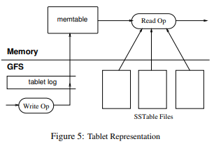
4.7.1 持久化状态
Tablet 的持久化状态 是存储在 GFS 中的。Tablet 的更新记录会被提交到 commit log（提交日志）中，这个日志记录了所有的修改（称为 redo 记录），用于在系统崩溃或重启时恢复数据。
最近提交的更新会被存储在内存中的一个有序缓冲区，称为 memtable。更老的更新会被存储在磁盘上的 SSTable 文件中。
4.7.2 恢复tablet
当 tablet 服务器需要恢复某个 tablet 时，它会从 METADATA 表 中读取该 tablet 的元数据。元数据包含组成该 tablet 的所有 SSTable 文件列表，以及一些 redo 点（指向 commit log 的位置，可能还包含 tablet 的数据）。
服务器将 SSTable 的索引加载到内存中，并通过应用从 redo 点之后的所有提交日志来重建 memtable。
4.7.3 写操作
当写操作到达 tablet 服务器时，服务器首先检查写入操作是否格式正确，并验证发送者是否有权限执行该操作。权限验证通过读取 Chubby 文件 中的授权列表来完成，通常这个检查是从 Chubby 客户端的缓存中进行的。
如果写入操作是有效的，数据会被写入 commit log。Bigtable 使用 group commit 技术来提高小量多次修改的吞吐量，减少磁盘写入的开销。
写入操作被提交后，数据会被插入到内存中的 memtable 中。
4.7.4 读操作
当读操作到达时，服务器同样检查读请求的格式是否正确，并验证发送者是否有权限读取数据。经过验证后，服务器会在 SSTable 和 memtable 的合并视图上执行读取操作。
因为 SSTable 和 memtable 都是按字典序排序的数据结构，所以合并视图可以高效地构建。
4.7.5 并发性
Tablet 的分裂（split）和合并（merge）操作可以在后台进行，而不会中断读写操作。
4.8 Bigtable的压缩
读写操作在压缩过程中可以继续执行，不会中断操作。
4.8.1 小规模压缩（Minor Compaction）
当 memtable 的大小超过阈值时，它会被冻结，并转换成一个 SSTable 文件，然后写入到 GFS 中。这一过程称为小规模压缩。
小规模压缩有两个目的：
1. 减少内存使用：将 memtable 中的数据持久化到 SSTable，释放 tablet 服务器的内存。
2. 减少恢复时间：如果服务器崩溃，恢复时需要从日志中读取的内容会减少，因为部分数据已经存储在 SSTable 中，而不需要完全依赖 commit log。
4.8.2 合并压缩（Merging Compaction）
每次小规模压缩都会生成一个新的 SSTable。如果长期不处理，读操作可能需要从多个 SSTable 中合并读取数据，增加查询复杂度。因此，系统会周期性地执行 合并压缩，在后台运行。
合并压缩 会读取多个 SSTable 的内容，以及 memtable 中的数据，合并它们并写入一个新的 SSTable。合并完成后，旧的 SSTable 和 memtable 可以被丢弃。
4.8.3 全局压缩（Major Compaction）
全局压缩是一种特殊的合并压缩，它将所有的 SSTable 重新写入到一个新的 SSTable 中。全局压缩会清除所有的删除标记和被删除的数据。
删除标记：在非全局压缩过程中，SSTable 可能包含一些特殊的删除条目，这些条目用来标记哪些数据已经被删除。这些条目会覆盖旧的 SSTable 中仍然存在的数据，确保它们不会被读取。
全局压缩的作用：
1. 回收删除数据所占用的存储资源。
2. 确保删除的数据完全从系统中消失，特别是对于存储敏感数据的服务来说，这一点非常重要。
点击返回🔗我的博客文章目录
- 目录 {:toc}
1. Bison简介
Bison是yacc的现代版本，由自由软件基金会的GNU项目帮助发布。
Bison分为Linux版本和Windows版本。
2. Bison工作原理
2.1 Bison和Flex协同工作
Flex：词法分析器，将输入分割成一个个有意义的词块，称为记号（token）
Bison：语法分析器，根据给定的语法规则将Flex生成的tokens转换为抽象语法树（AST）
编译顺序：
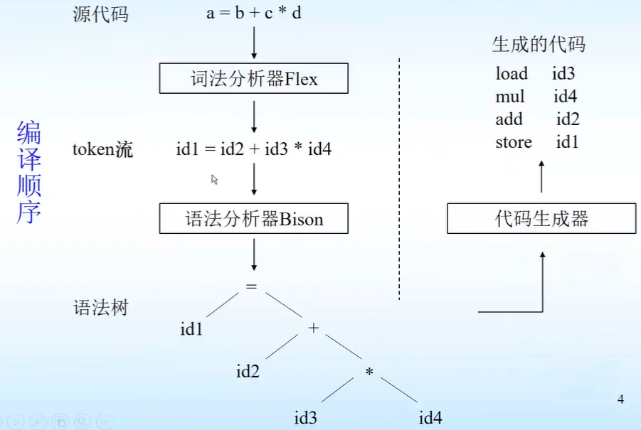
协同工作顺序：
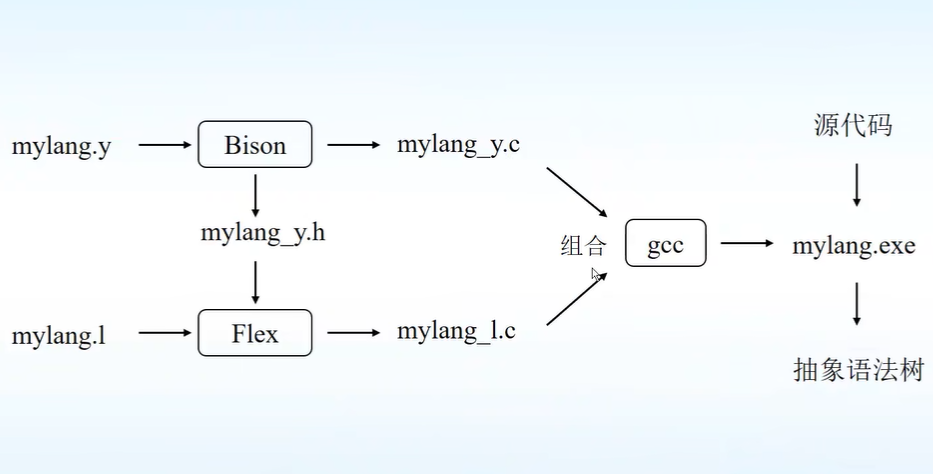
3. Bison的输入
Bison的输入为*.y文件：
3.1定义段
- 以c语法写的一些定义和声明，该部分以符号
%{和%}包裹。 - 对词法的终结符和非终结符的声明，主要包含：
%token,%left,%right,%nonassoc,%union,%type,%start。
%token定义语法中使用的终结符。
%left,%right,%nonassoc也是定义词法中的终结符，但它们定义的终结符具有某种优先级和结合性。
%left表示左结合，%right表示右结合，%nonassoc表示不可结合。
%union为c语言的联合类型，声明语法分析器中符号值的类型。
%union {
int num;
char *str;
}
一旦联合类型被定义，就需要告诉Bison每种符号使用的值类型，通过在尖括号<>中的联合类型的相应成员名来确定。
%token <num> TOKEN1
%type定义语法中使用的非终结符。
%start定义语法分析的开始符号，开始符号必须具备一个空规则，为了让开始输入的记号能从起始符号开始匹配。
3.2 语法规则段
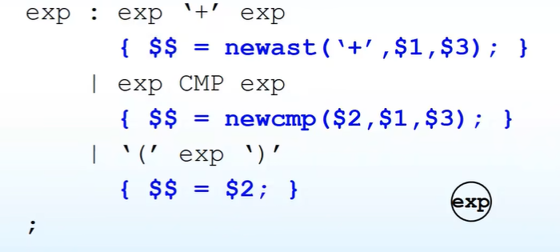
3.3 辅助函数段
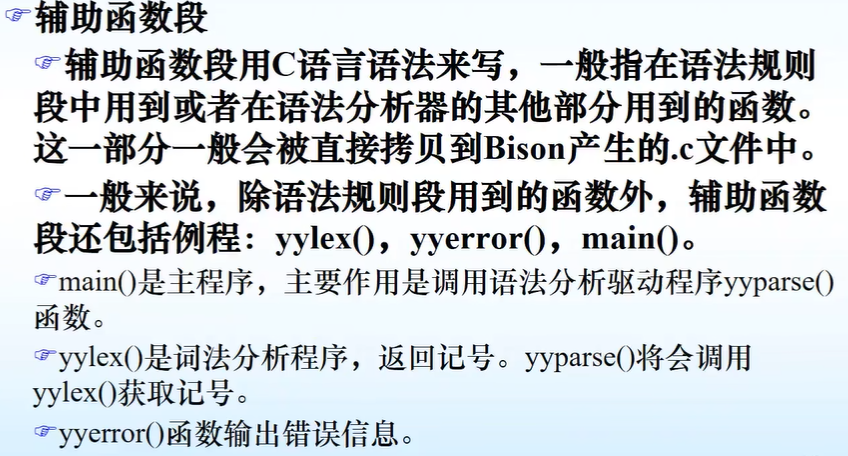
点击返回🔗我的博客文章目录
- 目录 {:toc}
1. Flex的使用
.l是Flex源文件，经过Flex编译器，默认生成lex.yy.c文件。
c编译器默认生成名为a.out的可执行文件。
输入流经过a.out文件，输出词法单元序列。
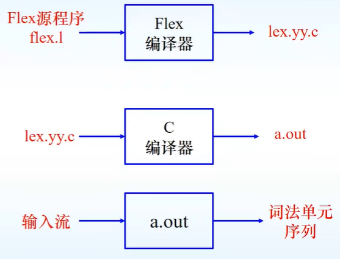
1.1 Flex源程序的一般形式
三个部分：声明部分、转换规则、辅助函数。三个部分使用%分隔。
声明部分包含名称声明及选项设置，其中%{和%}之间的内容会被原样复制到生成的c文件开头，通常放一些头文件及注释。
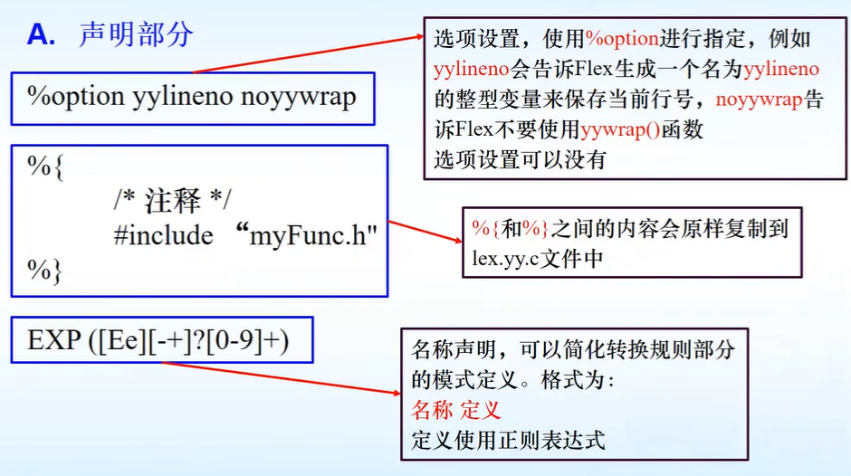
转换规则部分，每个规则由两部分组成：模式和动作，两者由空白分开。词法分析程序识别出某个模式后，执行该模式对应的动作。
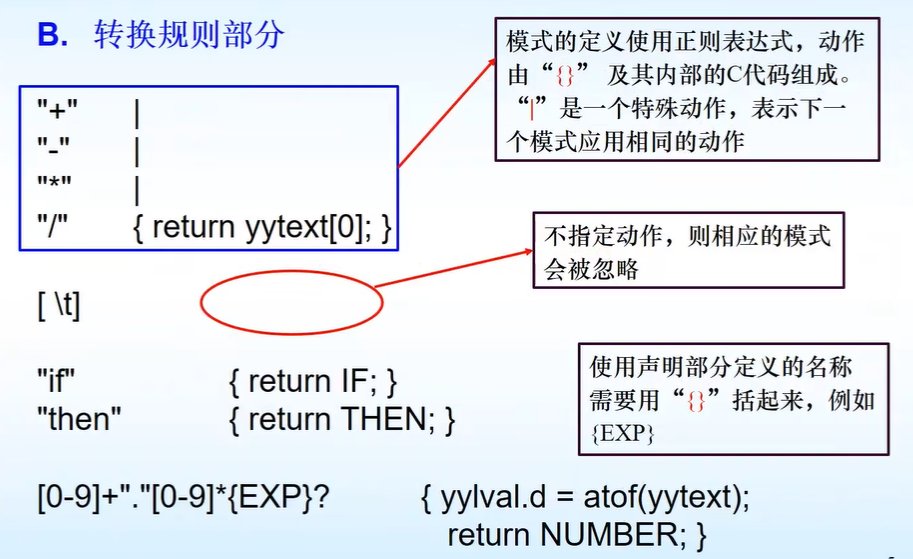
辅助函数可以包含任一合法的c代码，这一部分的内容也会被复制到生成的c文件中。
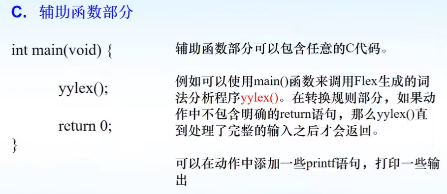
1.2 Flex处理二义性模式
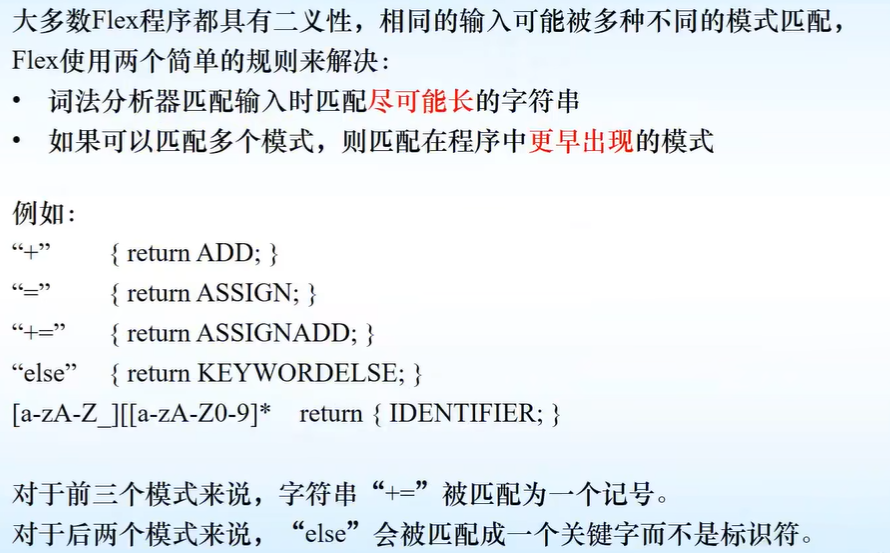
点击返回🔗我的博客文章目录
- 目录 {:toc}
paper link
1. Google File System(GFS)介绍
Google File System (GFS) 是谷歌为应对其大规模数据处理需求而开发的一种分布式文件系统。它的设计目标是高可扩展性和高容错性，能够在大量廉价的硬件设备上运行并提供高性能的数据存储解决方案。GFS 的特点是能够处理分布式数据密集型应用程序，适应如搜索引擎索引、大规模数据处理等需求。
2. 设计
2.1 接口
GFS 提供了类似传统文件系统的接口，但没有实现标准的 API（例如 POSIX）。文件以路径名在目录中进行层次化组织，支持常见的文件操作，如创建、删除、打开、关闭、读取和写入。
除此之外，GFS 提供了两个关键操作：快照（Snapshot） 和 记录追加（Record Append）。
快照：
这个功能可以以低成本创建文件或目录树的副本。它特别适合在不占用过多存储资源的情况下，快速保存文件的某个版本或整个目录结构的副本。这对于数据的备份和版本管理非常有用。
记录追加：
允许多个客户端同时向同一个文件追加数据，并确保每个客户端的追加操作是原子性的，即不会被其他客户端的操作中断。这种设计非常适合像多路合并结果和生产者-消费者队列等应用场景，多个客户端可以在没有额外锁定机制的情况下，同时追加数据到同一文件。
2.2 架构
GFS架构包括三个核心组件：
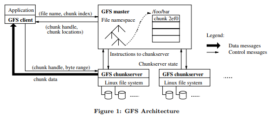
2.2.1 GFS 客户端
GFS 客户端与应用程序相连，负责处理来自应用程序的文件系统操作请求。
客户端不直接存储文件数据，而是通过与 GFS Master 和 GFS Chunkserver 的通信来读写数据。
对于每个请求，客户端会首先联系 Master 来获取文件块的元数据信息（例如，文件名、块位置、块句柄），然后直接与 Chunkserver 进行数据交互。
客户端会缓存一些元数据，减少与 Master 的交互次数，但不缓存实际文件数据，以避免缓存一致性问题。
2.2.2 GFS Master
GFS Master 是整个文件系统的核心管理组件，负责管理文件系统的元数据（如文件路径、块句柄与位置映射、访问控制等）。
当客户端发出请求时，Master 会返回块的位置和相应的 Chunkserver 列表，而具体的读写操作则在客户端与 Chunkserver 之间直接进行。
Master 负责控制一些全局活动，比如块的租约管理（确保某个 Chunk 的副本一致性）、孤立块的垃圾回收、以及块在不同 Chunkserver 之间的迁移。
GFS Master 与每个 Chunkserver 定期通过“心跳”消息进行通信，发送指令并收集 Chunkserver 的状态信息。
2.2.3 GFS Chunkserver
Chunkserver 是负责实际存储文件块的组件，文件被分割成大小固定的块（默认为 64MB），每个块通过 Master 生成的唯一 64 位块句柄进行标识。
文件块被存储为 Linux 文件，并存储在 Chunkserver 的本地磁盘中。每个文件块默认会有三份副本存储在不同的 Chunkserver 上，以增强容错能力。
当客户端向 Chunkserver 请求读写数据时，基于块句柄和字节范围，Chunkserver 提供相应的块数据。
每个文件块有多个副本，系统通过这些副本来处理服务器故障，以确保数据的可靠性。
2.3 单一Master
在GFS中，使用单一 Master 来简化系统的设计，并利用 Master 的全局信息来做出复杂的块（chunk）放置和复制决策。然而，为了避免 Master 成为系统的瓶颈，必须尽量减少其在读写操作中的参与。
2.3.1 读操作流程
初始请求：
客户端（Client）首先通过文件名和字节偏移（byte offset）将应用程序请求翻译为文件内的块索引（chunk index）。然后客户端向 Master 发送请求，该请求包含文件名和块索引。
Master 返回信息：
Master 回复一个块句柄（chunk handle）和块副本所在的服务器地址。客户端将这些信息缓存下来，使用文件名和块索引作为键。
数据读取：
客户端选择其中一个副本服务器（通常是最近的一个）发送请求。请求中包含块句柄和要读取的字节范围。随后，客户端直接与 Chunkserver 进行数据交互，而不再通过 Master。
缓存机制：
对于同一文件块的后续读取，客户端不再与 Master 进行交互，直到缓存信息过期或者文件被重新打开。此外，客户端通常会在一次请求中查询多个块的元数据，而 Master 也可能返回紧随请求的块信息，这样可以避免未来的多次交互。
2.4 块大小（Chunk Size）
在GFS中，块大小（Chunk Size） 是一个关键的设计参数，GFS 将每个块的大小设为 64 MB，这远大于传统文件系统中的块大小。
2.4.1 大块设计的优势
减少客户端与 Master 的交互：
当客户端读取或写入同一个块时，只需要向 Master 发送一次请求以获取块位置信息。特别是对于读取和写入大文件的顺序操作，这种减少交互的好处尤为显著。即使是小范围的随机读取，客户端也能够舒适地缓存整个多 TB 工作集的块位置信息。
减少网络开销：
客户端对大块进行多次操作的几率更高，因此可以保持与 Chunkserver 的持续 TCP 连接，减少了每次操作时重新建立连接的网络开销。
降低元数据的存储压力：
每个文件由较少的块组成，减少了存储在 Master 上的元数据数量。由于元数据减少，Master 能够将所有元数据保存在内存中，从而提高系统的访问速度和性能。
2.4.2 大块设计的缺点
对于小文件，由于只包含少量的块，可能只有少数几个 Chunkserver 存储了这些块。如果有大量客户端同时访问这些小文件，可能会导致这些 Chunkserver 成为“热点”，承受过多负载。
为了解决这个批处理系统中的热点问题，GFS 采取了以下措施：
增加此类可执行文件的副本数（即增加块的复制因子）。
通过批处理系统的调度，错开应用程序的启动时间，避免同时大量请求。
未来的潜在解决方案包括让客户端在类似情况下从其他客户端读取数据。
2.5 元数据
在 GFS 中，Master 存储了三种主要类型的元数据：
文件和块命名空间：
这是文件系统中的路径结构，记录了所有文件和块的层次化结构，即文件名和块名。
文件到块的映射：
这是文件和它们所对应的块之间的映射关系。Master 需要知道每个文件包含哪些块，以便能指导客户端去正确的 Chunkserver 获取数据。
每个块的副本位置信息：
这记录了每个块的副本存储在哪些 Chunkserver 上。
前两类元数据（命名空间和文件到块的映射）是持久化存储的。Master 会将它们的更改（称为“变更”）记录在操作日志中，该日志存储在 Master 的本地磁盘上，并在远程机器上有副本。这种日志记录机制使得 Master 的状态更新简单可靠，即使 Master 崩溃，也能通过日志恢复数据一致性。
块位置信息并不持久化。Master 在启动时会向每个 Chunkserver 请求其拥有的块信息，当有新的 Chunkserver 加入集群时，也会进行相应更新。
2.5.1 元数据存储在内存中
在 GFS 中，Master 将元数据存储在内存中，这使得 Master 的操作非常快速。由于元数据直接保存在内存中，Master 可以轻松地定期在后台扫描其所有状态数据。这些周期性扫描用于实现一些关键功能，例如：
垃圾块回收：当某些块不再需要时，Master 可以通过扫描发现这些块并将其删除。
再复制：如果某个 Chunkserver 发生故障，Master 可以检测到这些块缺失并触发副本的再复制。
块迁移：为平衡 Chunkserver 之间的负载和磁盘使用率，Master 可以执行块迁移操作。
2.5.2 Chunk位置
在 GFS 中，Master 并不会持久保存每个块的副本位置信息。相反，当 Master 启动时，它通过轮询各个 Chunkserver 来获取这些信息。之后，Master 通过控制块的放置以及定期与 Chunkserver 进行的心跳消息（HeartBeat）保持最新的块位置信息。
2.5.3 操作日志

串行成功（Serial Success）：
写操作：当写操作顺序完成时，文件区域的状态是已定义的（defined），即数据被准确写入，结果是确定的。
记录追加操作：当多个客户端进行记录追加操作时，它们的数据可以成功地附加到文件末尾，但不同客户端的数据可能交错在一起。因此，文件区域的状态是部分一致且不一致（inconsistent interspersed），因为数据可能按不确定的顺序混合在一起。
并发成功（Concurrent Success）：
写操作：当多个客户端同时成功写入同一区域时，结果是一致的但未定义的（consistent but undefined）。虽然所有写入的结果是稳定的，但由于没有明确的顺序，文件最终的内容可能不确定。
记录追加操作：在并发追加成功的情况下，文件区域是不一致的（inconsistent），因为可能存在交错的操作。
失败（Failure）：
写操作和记录追加操作在失败的情况下，文件区域会处于不一致的（inconsistent）状态，即数据的写入或追加可能部分完成，导致文件内容不完整或错误。
GFS 的操作日志记录了关键的元数据更改,它不仅是唯一持久化元数据的记录，还通过逻辑时间线来定义并发操作的顺序。Master 在每次更改元数据时会将这些变化记录到操作日志中，并将日志复制到远程机器，如果 Master 崩溃，它会通过重放操作日志来恢复文件系统的状态。
为了减少启动时间，Master 会在日志文件达到一定大小时，进行检查点（checkpoint）的保存。检查点包含了元数据的当前状态，Master 可以通过加载最新的检查点并重放之后的日志记录来快速恢复状态。
2.6 一致性模型
在GFS中，采用了宽松的一致性模型，这非常适合高度分布式的应用程序。
2.6.1 一致性保证
定义一致性（Defined Consistency）：
在串行成功的操作中，写入操作和记录追加操作的结果是确定的，即文件区域的内容与期望的写入值一致。
一致但未定义（Consistent but Undefined）：
当多个客户端并发地写入同一区域时，GFS 保证最终的文件内容是一致的，但不保证具体的写入顺序，因此文件的最终状态是未定义的。
不一致（Inconsistent）：
在写入失败或发生冲突时，文件的某些区域可能处于不一致的状态，即无法确定文件区域的内容。
命名空间变更的原子性：
GFS 保证了文件命名空间的变更（例如创建或删除文件）是原子的。由于这些操作都是由 Master 独立处理的，使用了命名空间锁机制确保原子性和正确性。此外，Master 的操作日志定义了全局的操作顺序，使得并发操作有序可控。
故障处理与副本一致性：
为了确保一致性，GFS 对每个块的副本按相同的顺序应用变更操作，并通过块的版本号来检测和标记失效副本。如果某个 Chunkserver 在变更时未能及时同步，系统会将其副本标记为过时，确保它不再参与后续的变更操作或提供给客户端读取请求。过时的副本会尽早被垃圾回收。
GFS 通过定期的“心跳”通信检测 Chunkserver 的状态，并使用校验和机制来检测数据损坏。一旦检测到故障，系统会尽快从其他有效副本中恢复数据。
缓存与过时副本：
客户端缓存从 Master 获取的块位置信息。虽然客户端可能在缓存过期前读取到过时的副本，但这种情况通过缓存的超时机制和文件重新打开时清除缓存来限制。对于大多数顺序追加的文件，过时副本通常返回的是文件块的提前结束信息，而不是过时的数据。
2.6.2 数据变更类型
GFS 支持两种主要的数据变更操作：写入和记录追加：
写入操作：
客户端可以在文件的指定偏移处写入数据，数据在同一偏移处可能被多个客户端并发写入，从而可能产生未定义的区域。
记录追加操作：
客户端可以向文件的末尾追加数据，GFS 确保每个追加操作至少成功一次，即使发生并发变更。记录追加操作是原子的，但追加的位置由 GFS 决定，返回给客户端的偏移标记了定义区域的开始。GFS 可能在追加数据之间插入填充或重复记录，这些部分通常被认为是不一致的区域。
2.6.3 对应用的影响
依赖追加而非覆盖：
大多数 GFS 应用程序通过追加数据来变更文件，而不是覆盖已有数据。
检查点和校验：
应用程序会在写入过程中使用检查点（checkpointing）来标记数据的一致状态。检查点可以包含应用程序级别的校验和，帮助读者验证文件的完整性。读者只会处理到最后一个检查点的文件区域，因为该区域是已知的定义状态。
自验证、自标识的记录：
对于并发追加数据的情况，例如多个客户端同时向文件中追加数据，应用程序使用记录追加（Record Append）来保证每个写入至少成功一次。这种操作通常用于合并结果或生产者-消费者队列。为了处理由于并发追加产生的填充数据和重复数据，每条记录都包含额外信息（如校验和），帮助读者验证其有效性并识别无效的填充或记录片段。
如果重复数据可能导致问题，应用程序可以通过唯一标识符（例如用于标识 Web 文档的 ID）来过滤重复项。
高效且恢复能力强：
这种基于追加和检查点的模型不仅比随机写入更加高效，还能帮助应用程序在失败后增量重启，确保读者不会处理不完整的数据。
3. 系统交互
GFS系统设计时，主要减少了Master对所有操作的参与。
3.1 租约机制和变更顺序
在GFS中，租约机制用于在副本之间保持一致的变更顺序。租约的机制确保所有副本按相同的顺序应用变更（mutation），从而保证数据的一致性。
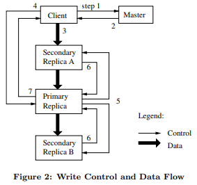
写操作流程：
1. 客户端请求租约信息：
客户端首先向 Master 询问哪个 Chunkserver 持有该块（chunk）的当前租约（lease），以及其他副本的位置信息。如果当前没有租约，Master 会选择一个副本并授予它租约（不显示在图中）。
2. Master 响应客户端：
Master 向客户端回复持有租约的 Chunkserver（即 Primary 副本）以及其他副本（Secondary 副本）的位置信息。客户端将这些信息缓存，直到 Primary 无法访问或失去租约时，才需要再次联系 Master。
3. 客户端推送数据到所有副本：
客户端将数据推送到所有副本（包括 Primary 和 Secondary）。这可以按任意顺序进行。每个 Chunkserver 会将接收到的数据存储在内部的 LRU 缓存中，直到该数据被使用或逐渐被淘汰。
4. 客户端发送写请求给 Primary：
一旦所有副本确认接收到数据，客户端会向 Primary 发送写请求。此请求标识之前推送的数据。Primary 将为接收到的变更分配连续的序列号，确保变更按顺序应用。
5. Primary 将写请求转发给 Secondary 副本：
Primary 将写请求按照分配的序列号顺序转发给所有 Secondary 副本，确保所有副本以相同的顺序应用变更。
6. Secondary 副本确认操作完成：
Secondary 副本完成变更操作后，向 Primary 确认已完成操作。
7. Primary 向客户端回复：
Primary 在收到所有 Secondary 副本的确认后，向客户端发送确认回复。如果在任何副本上遇到错误，错误会报告给客户端。如果写操作在 Primary 或部分副本上失败，客户端会认为写操作失败，并将受影响的文件区域标记为不一致。客户端代码会重试该变更操作，通常在步骤 3 到 7 之间进行多次重试，如果仍然失败，则从写操作的起始位置重试。
租约机制：
Master 授予租约给某个副本（Primary），使其负责为该块的变更操作分配顺序。其他副本（Secondary）会按照这个顺序应用变更。
数据流与控制流分离：
客户端在将数据推送到副本后，再进行写操作的控制流。这种分离使得系统能够根据网络拓扑结构优化数据传输，而不必依赖 Primary 的位置。
一致性与未定义状态：
即使多个客户端同时写入文件，只要所有副本按照相同的顺序完成操作，最终结果将是一致的。不过，由于并发操作，文件可能会包含来自不同客户端的片段，导致该区域的一致性是未定义的。
3.2 数据流
在 GFS 中，数据流（Data Flow） 和 控制流（Control Flow） 是分离的，目的是有效利用网络资源，提高数据传输效率。这种设计的具体目标包括充分利用每台机器的网络带宽、避免网络瓶颈和高延迟链路、以及将数据传输的延迟最小化。
控制流：
客户端向 Primary 副本发送控制指令（如写入请求），然后 Primary 将指令按序传递给 Secondary 副本。控制流从客户端流向 Primary，再依次流向所有 Secondary。
数据流：
数据以线性的方式沿着选定的 Chunkserver 链条传输。这种方式通过流水线机制进行数据传输，充分利用每台机器的网络带宽，尽量避免网络中的瓶颈和高延迟链路。
线性数据推送：
数据不是像树状拓扑那样同时分发到多个节点，而是沿着一条链式拓扑逐个推送。通过这种方式，每个 Chunkserver 的全部出站带宽可以被用于将数据尽快传递到下一个 Chunkserver，而不是分给多个接收方，从而最大化网络带宽的利用。
避免网络瓶颈：
为了避免通过网络交换机等高延迟和网络瓶颈，数据按照网络拓扑中“最近”的机器顺序传递。每个 Chunkserver 会将数据转发给它最近的、尚未收到数据的机器，这样能够避免远程链路带来的延迟。
流水线传输：
GFS 利用 TCP 连接的流水线机制来降低延迟。一旦某个 Chunkserver 接收到部分数据，它立即开始向下一个 Chunkserver 转发。
3.3 原子记录追加
原子记录追加（Atomic Record Append）是 GFS 中提供的一种特殊操作，用于解决并发写入同一文件时的竞争问题。传统写操作中，客户端会指定数据写入的偏移量，而多个客户端同时写入相同区域可能导致数据混乱和碎片化。而在 Record Append 操作中，客户端只需指定数据，GFS 负责将数据原子性地追加到文件末尾，并选择合适的偏移量返回给客户端。
3.3.1 工作原理
1. 数据推送：
客户端将数据推送到文件最后一个块的所有副本。
2. 写入到 Primary：
客户端发送请求到 Primary 副本。Primary 检查当前块是否有足够的空间容纳新数据。
如果块已接近最大大小（64 MB），Primary 会将块填充到最大大小并通知副本，然后让客户端重试在下一个块上追加数据。
如果数据可以写入，Primary 将数据追加到其副本，并指示 Secondary 副本在相同的偏移位置写入数据，最后向客户端确认成功。
3. 失败处理：
如果写入某个副本时失败，客户端会重试。因此，同一个块的不同副本可能会包含重复的数据或部分记录。GFS 不保证所有副本的字节内容完全一致，但保证数据至少会作为一个原子单位写入一次。
成功的 Record Append 操作后，数据所在的区域被视为已定义的，即一致且可预测的。
在并发追加中，不同客户端追加的数据可能导致插入的顺序不同，但它们的偏移量和范围是有序的。
3.4 快照（Snapshot）
GFS中，快照操作（Snapshot）用于几乎瞬时地复制文件或目录树，且对正在进行的变更（mutations）产生的中断最小。用户可以使用快照来快速创建数据集的分支副本，或者在进行实验性更改前对当前状态进行检查点保存，之后可以方便地提交更改或回滚。
3.4.1 实现机制
GFS 使用了写时复制（Copy-on-Write）技术来实现快照，具体步骤如下：
1. 撤销租约（Lease Revocation）：
当 Master 接收到快照请求时，它首先撤销文件块的现有租约。这确保了任何后续写入操作在访问这些块时必须与 Master 进行交互。这样 Master 可以在写入发生前，首先创建该块的新副本。
2. 日志记录：
租约被撤销或失效后，Master 将快照操作记录到磁盘中，确保其持久性。然后，Master 会在内存中应用该日志记录，通过复制源文件或目录树的元数据来更新状态。
3. 共享块：
新创建的快照文件最初会指向与源文件相同的块。这样，快照操作不会立即创建新的物理数据副本，避免了数据的大量复制，节省了时间和存储资源。
4. 写时复制：
当客户端在快照操作后首次写入某个块时，它会向 Master 发送请求以查找当前的租约持有者。Master 发现该块的引用计数大于 1，即该块同时被多个文件引用。此时，Master 会生成一个新的块句柄，并要求持有原始块副本的 Chunkserver 创建一个新的块副本。新块创建在与原始块相同的 Chunkserver 上，以便数据可以在本地复制而不是通过网络传输。磁盘传输速度比网络快得多，避免了网络带宽的瓶颈。
5. 正常处理：
从此时起，后续的处理就和对普通块的操作没有区别。Master 会将新块的租约授予某个副本，并回复客户端，客户端可以像往常一样写入数据，而无需知道该块实际上是从现有块复制而来的。
3.4.2 优势
这种快照机制提供了快速且高效的文件复制方法，特别适合处理大规模数据集，避免了直接复制数据导致的性能问题。
4. Master操作
在 GFS 中，Master 执行所有的命名空间操作，同时负责管理系统中的块（chunk）副本。其主要职责包括以下几方面：
命名空间操作：
Master 处理所有涉及文件和目录的命名空间操作（如文件创建、删除、重命名等）。它通过管理命名空间元数据来确保文件系统的一致性和正确性。
块副本管理：
块放置决策：
Master 决定新的块副本应该放置在哪些 Chunkserver 上。它考虑了负载均衡和数据可靠性等因素，确保副本分布均匀且具备容错能力。
块创建与复制：
当需要创建新的块或副本时，Master 负责协调 Chunkserver 创建这些块，并确保它们被正确地复制到多个服务器上。
系统协调：
副本保持与复制：
Master 持续监控系统中的块副本数量，确保每个块的副本数目达到预定值。当某个 Chunkserver 失效或副本丢失时，Master 会协调复制更多的副本以确保数据的高可用性。
负载均衡：
Master 监控每个 Chunkserver 的负载情况，努力将负载分配均匀，避免单个服务器过载。
存储回收：
Master 还负责回收未使用的存储资源。例如，当文件或块不再需要时，Master 会安排 Chunkserver 删除这些块以释放存储空间。
4.1 命名空间管理和锁机制
在 GFS 中，命名空间管理和锁机制确保了多个并发操作可以安全、高效地执行，特别是在复杂操作（例如快照）执行时不会阻塞其他操作。
命名空间管理：
GFS 没有传统文件系统中的每目录数据结构，也不支持硬链接或符号链接。相反，它将命名空间逻辑上表示为一张查找表，将完整路径名映射到文件的元数据。
为了提高内存效率，GFS 使用前缀压缩来表示这些路径名，以减少内存占用。
锁机制：
每个命名空间树的节点（即文件或目录的绝对路径）都与一个读写锁相关联。Master 操作会在执行前获取一组锁，以确保操作的序列化。例如，涉及路径 /d1/d2/.../dn/leaf 的操作会获取这些路径上的读锁或写锁，以确保路径和节点的正确访问。
这种锁机制允许在同一目录中的并发操作。例如，多个文件可以在同一目录下并发创建。每个创建操作只需获取目录名的读锁和文件名的写锁。这可以防止目录被删除、重命名或快照化，但不会阻止文件的创建。
为防止死锁，锁会按一致的全局顺序获取。锁首先按命名空间树中的层次级别排序，然后在同一层次内按字典序排序。
4.1.1 示例：防止冲突操作
当 /home/user 目录正在快照到/save/user时，另一个操作试图在 /home/user 下创建文件 /home/user/foo，锁机制如何防止冲突：
快照操作会在 /home 和 /save 目录上获取读锁，并在 /home/user 和 /save/user 上获取写锁。
创建文件操作会在 /home 和 /home/user 上获取读锁，并在 /home/user/foo 上获取写锁。
由于两者都需要在 /home/user 上获取不同的锁，这两个操作会被正确序列化。
4.2 块创建（chunk creation）、重新复制（re-replication） 和 重新平衡（rebalancing）
在 GFS 中，块副本的创建有三种主要原因：块创建（chunk creation）、重新复制（re-replication） 和 重新平衡（rebalancing）。
4.2.1 块创建（chunk creation）
当 Master 创建一个块时，它会决定副本放置在哪些 Chunkserver 上。以下几个因素会影响副本的放置：
磁盘空间利用率：
Master 会优先选择那些磁盘利用率低于平均水平的 Chunkserver，以平衡整个集群的磁盘利用率。
限制在每个 Chunkserver 上的创建操作数：
虽然创建块本身很便宜，但它往往会预示即将到来的大量写入流量，因为在 GFS 的“写一次，读多次”的工作负载模式下，块一旦写满后，通常会变为只读。因此，Master 会限制每个 Chunkserver 上的块创建数。
跨机架分布：
为了提高容错能力，块副本会分布在不同的机架上，防止单个机架故障时丢失所有副本。
4.2.2 重新复制（re-replication）
当块的副本数量低于用户设定的复制目标时，Master 会立即启动重新复制。这可能是因为 Chunkserver 不可用、块副本可能已损坏、磁盘出现错误、或者复制目标增加。重新复制操作的优先级根据以下因素进行排列：
与复制目标的差距：
优先处理那些与复制目标差距较大的块。例如，丢失两个副本的块比只丢失一个副本的块优先级更高。
文件活跃度：
优先重新复制属于活跃文件的块，而不是那些属于已删除文件的块。
阻塞客户端进度的块：
如果某个块的缺失阻碍了客户端的进度，该块的优先级会被提升。
Master 选择最高优先级的块，并指示某个 Chunkserver 从现有的有效副本复制数据，生成新的副本。新副本的放置规则类似于创建块时的标准：平衡磁盘空间利用、限制每个 Chunkserver 上的克隆操作，并将副本分布在不同的机架上。
4.2.3 重新平衡（rebalancing）
Master 会定期检查副本分布，并移动副本以实现更好的磁盘空间和负载均衡。Master 通过这种方式，逐步填充新加入的 Chunkserver，而不是立即向其分配大量块及写入流量。副本重新平衡的标准与副本创建类似，同时 Master 会选择需要删除的现有副本，通常优先删除那些位于磁盘空间较少的 Chunkserver 上的副本，以平衡集群的磁盘使用情况。
4.3 垃圾回收
在 GFS 中，垃圾回收（Garbage Collection）是为了释放文件删除后所占用的物理存储空间，但它不是立即执行的，而是懒惰地进行，在常规的垃圾回收过程中处理。
垃圾回收过程：
文件级别的回收：
当文件被删除后，文件不会立即从系统中移除，而是先被标记为“已删除”，在之后的垃圾回收过程中真正回收这些文件的存储空间。
块级别的回收：
删除文件时，相关的块数据也不会立刻被移除。垃圾回收会定期检查哪些块不再被引用，并逐步回收它们的存储空间。
延迟回收的好处：
简化系统设计：
垃圾回收不需要与文件删除操作同步进行，减少了对系统的复杂性。
提高可靠性：
通过定期的垃圾回收，系统能够更加稳定地管理和释放存储资源，而不会因频繁的文件删除导致系统不稳定。
垃圾回收的触发时机：
GFS 定期触发垃圾回收操作，以查找和移除不再使用的块数据。
4.3.1 垃圾回收具体机制
文件重命名：
当文件被删除时，Master 会将文件重命名为一个隐藏文件，名称包含删除时间戳。这个文件不会立即被移除，而是保留一定的时间（默认三天，但可以配置）。在此期间，文件仍可以通过其隐藏名称读取，如果需要，可以通过重命名将其恢复。
定期扫描：
Master 定期扫描文件系统的命名空间。如果某个文件的隐藏状态持续超过预定的时间（例如三天），Master 会将该文件从命名空间中移除。这时，文件的元数据会被清除，切断该文件与其块（chunks）的链接。
块的清除：
在对文件命名空间进行扫描的同时，Master 也会扫描块命名空间，查找“孤立的块”（即不再被任何文件引用的块）。这些块的元数据会被 Master 清除。
Chunkserver 回收：
在 Master 与 Chunkserver 之间定期交换的 HeartBeat 消息中，Chunkserver 会报告其持有的块。Master 回复该 Chunkserver，告知哪些块已经不在 Master 的元数据中记录。之后，Chunkserver 可以自由地删除这些块的副本。
4.3.2 垃圾回收的简化
引用管理简单：
所有对块的引用都存储在由 Master 维护的文件到块的映射中。因此，Master 可以轻松识别哪些块不再有引用，并将其标记为孤立块。
副本管理：
块的副本在 Chunkserver 上以 Linux 文件的形式存在，任何未被 Master 识别的副本都被视为“垃圾”副本。这些副本可以通过垃圾回收机制定期清理。
4.3.3 垃圾回收简化的优缺点
优点：
简化和可靠性：
垃圾回收避免了在创建或删除副本时需要立即通知所有 Chunkserver 的复杂性。如果在创建块或删除副本的过程中出现失败或通信丢失，Master 仍可以通过后续的垃圾回收机制清理这些残留的副本。
背景批量处理：
垃圾回收与 Master 的其他后台任务（如命名空间扫描和与 Chunkserver 的握手）一起进行，因此在系统负载较轻时进行清理，避免影响前台的客户端请求。
防止误删：
由于垃圾回收有一定的延迟，用户在误删文件时有机会通过恢复隐藏文件重新获取数据，从而提供了一种安全网，避免了不可逆的删除操作。
缺点：
延迟回收影响资源优化：当系统存储空间紧张时，垃圾回收的延迟可能会阻碍用户优化存储使用。例如，应用程序频繁创建和删除临时文件时，可能无法立即重用被删除文件所占的空间。
4.4 过时副本检测（Stale Replica Detection）
在 GFS 中，过时副本检测是用来确保 Chunkserver 上的块副本保持最新的一个机制。由于 Chunkserver 可能会因为故障而停止运行，在此期间对块的变更操作（如写入）会使这些副本变得过时。因此，GFS 采用块版本号来区分最新和过时的副本。
过时副本检测的具体机制：
版本号维护：
每个块都有一个版本号，由 Master 维护。当 Master 授予某个块的新租约时，它会增加该块的版本号，并将新的版本号通知到最新的副本。Master 和这些副本会将新版本号记录在它们的持久化状态中。这些操作发生在客户端写入数据之前，确保客户端始终写入最新的块。
检测过时副本：
如果某个 Chunkserver 在块的变更操作期间不可用，那么该 Chunkserver 的块版本号不会更新。当 Chunkserver 重新启动并向 Master 报告它持有的块和版本号时，Master 会检测到这些块副本的版本号是否过时。如果 Chunkserver 报告的版本号低于 Master 记录的版本号，则该副本被视为过时。相反，如果 Chunkserver 报告的版本号高于 Master 的记录，Master 假定之前授予租约时发生了失败，并将更高的版本号视为最新版本。
移除过时副本：
Master 会在常规的垃圾回收过程中移除这些过时的副本。在此之前，当客户端请求块信息时，Master 会忽略这些过时的副本。此外，当客户端被通知某个块的租约持有者或 Chunkserver 被指示从另一个 Chunkserver 读取块时，Master 会包括块的版本号。客户端或 Chunkserver 会在执行操作时验证版本号，以确保它们始终访问最新的数据。
5. 高可用与问题诊断
在 GFS 的设计中，容错性 和 诊断能力 是应对频繁组件故障的关键挑战。
5.1 高可用性策略
快速恢复：
无论是 Master 还是 Chunkserver，都设计成能在几秒钟内恢复状态并重启。服务器可能会因故障或正常操作被杀死进程，但客户端和其他服务器只会短暂遇到请求超时，然后重新连接到重启后的服务器并重试操作。
块副本：
每个块都有多个副本（默认是 3 个），并分布在不同的机架上。这样即使有 Chunkserver 下线或副本损坏，系统也能通过现有的副本保持可用性。Master 通过检查校验和来检测副本的损坏，并在必要时克隆副本以保持所需的副本数量。
Master 副本：
Master 的状态和操作日志会被复制到多台机器上。每当有状态变更时，只有在日志被写入到本地磁盘和所有副本机器的磁盘后，才算完成提交。如果 Master 发生故障，监控系统会在其他机器上启动新的 Master 进程，并使用操作日志进行恢复。此外，“影子 Master” 提供只读访问，即使主 Master 不可用，系统仍然可以处理读操作。
5.2 问题诊断
影子 Master：
影子 Master 提供了对文件系统的只读访问，即使主 Master 停机也不影响读取操作。影子 Master 稍微滞后于主 Master，通常仅有几毫秒的延迟。文件内容通过 Chunkserver 读取，因此应用程序不会遇到过时的文件内容，可能过时的只是文件元数据（如目录内容或访问控制信息）。
操作日志：
影子 Master 通过读取操作日志副本，并与主 Master 一样应用相同的变更序列，以保持其数据结构的更新。它依赖主 Master 来获取副本的位置信息更新（如创建和删除副本时的决策）。
5.3 数据完整性
在 GFS 中，数据完整性 是通过 校验和（checksumming） 机制来检测数据损坏的，尤其是在集群规模很大且磁盘故障频繁的情况下。这种方法帮助 GFS 识别并修复由于读写路径中的磁盘损坏而导致的数据损坏。
5.3.1 主要机制
校验和的使用：
每个块（chunk）会被分成 64 KB 的小块（block），每个小块对应一个 32 位的校验和。这些校验和被单独存储，和用户数据分开保存。
在读取数据时，Chunkserver 会在返回数据之前先验证这些小块的校验和。如果校验和不匹配，Chunkserver 会向请求者返回错误，并向 Master 报告数据损坏。
请求者可以从其他副本读取数据，而 Master 会根据报告情况复制一个新的有效副本，随后删除已损坏的副本。
读操作中的校验和验证：
读取操作时，Chunkserver 会先验证重叠读取范围内的数据块的校验和，确保不会传播已损坏的数据。如果校验和不匹配，Chunkserver 会报错，并启动修复过程。
写操作中的校验和更新：
对于追加操作（append），GFS 会增量更新最后一个部分填充的校验和块，并为新增的块计算校验和。
对于覆盖写入（overwrite），GFS 必须在写入之前先验证要覆盖的块的起始和结束部分，以避免隐藏之前已存在的数据损坏。
空闲时校验：
在空闲时，Chunkserver 会扫描并验证不活跃的块，以检测可能存在的损坏。这确保了即使是很少读取的块，也不会因未检测的损坏影响数据的一致性。
点击返回🔗我的博客文章目录
- 目录 {:toc}
1. 比较器
本文介绍对于kdb中比较器Comparator的单元测试。
比较器实现逻辑如下：
解析键的长度： 代码首先从 left 和 right 字符串视图中读取键的长度（前面编码成 Varint 的 32 位整数）。通过 GetVarint32Ptr 函数从数据中解析出键的长度，并进行断言检查确保解析成功。
提取键值： 通过从 left_key_len_ptr 和 right_key_len_ptr 解析出的长度，创建两个新的 std::string_view 分别表示 left 和 right 的键值。
比较键值： 如果两个键值不同，直接比较它们的字符串值。std::string_view 支持字典序比较，代码通过 operator< 和 operator> 来进行比较，结果为 -1（left 小于 right）、1（left 大于 right）。
如果键值相等： 当两个键值相等时，代码进一步解析并比较序列号。使用 GetVarint64Ptr 函数从键值之后的位置提取出 64 位序列号，并进行比较。最终返回比较结果。
结果返回： 返回 -1 表示 left 小于 right，1 表示 left 大于 right，0 表示它们完全相同。
2. GoogleTest实现
为测试比较器，实现了ComparatorTest。
为了模拟工作场景，在测试中实现了Set函数，用于将数据编码为sstable内部键的格式。
std::string Set(const std::shared_ptr<SetContext>& set_context) {
auto key_size = VarintLength(set_context->key.size());
auto value_size = VarintLength(set_context->value.size());
auto sequence_number = VarintLength(set_context->value.size());
std::string simple_set_str = fmt::format(
"{}{}{}{}{}{}", format32_vec[key_size], set_context->key,
format64_vec[sequence_number], kEmpty1Space,
format32_vec[value_size], set_context->value);
char* start_ptr = simple_set_str.data();
start_ptr = EncodeVarint32(start_ptr, set_context->key.size());
start_ptr += set_context->key.size();
start_ptr = EncodeVarint64(start_ptr, set_context->number);
EncodeFixed8(start_ptr,ValueType::kTypeValue);
start_ptr += 1;
EncodeVarint32(start_ptr, set_context->value.size());
return simple_set_str;
}
实现了三个测试用例：
- 测试两个相同的键值：
TEST_F(ComparatorTest, CompareEqualStringView) {
SetContext context1(std::string_view("key1"), std::string_view("key"));
context1.number = 1;
SetContext context2(std::string_view("key2"), std::string_view("key"));
context2.number = 2;
std::string_view testcontext1 = Set(std::make_shared<SetContext>(context1));
std::string_view testcontext2 = Set(std::make_shared<SetContext>(context2));
EXPECT_EQ(-1,cmp(testcontext1, testcontext2)); // session1 < session2，
EXPECT_EQ(1,cmp(testcontext2, testcontext1)); // session2 > session1，
}
在键值相同时，比较序列号大小。
- 测试两个不同的键值：
TEST_F(ComparatorTest, CompareDifferentStringView) {
SetContext context1(std::string_view("key1"), std::string_view("key1"));
SetContext context2(std::string_view("key2"), std::string_view("key2"));
std::string_view testcontext1 = Set(std::make_shared<SetContext>(context1));
std::string_view testcontext2 = Set(std::make_shared<SetContext>(context2));
EXPECT_EQ(-1,cmp(testcontext1, testcontext2));
EXPECT_EQ(1,cmp(testcontext2, testcontext1));
}
- 测试空的键值：
TEST_F(ComparatorTest, CompareEmptyStringView) {
SetContext context1(std::string_view("key1"), std::string_view(""));
SetContext context2(std::string_view("key2"), std::string_view("key"));
std::string_view testcontext1 = Set(std::make_shared<SetContext>(context1));
std::string_view testcontext2 = Set(std::make_shared<SetContext>(context2));
EXPECT_EQ(-1,cmp(testcontext1, testcontext2));
EXPECT_EQ(1,cmp(testcontext2, testcontext1));
}
测试命令：
g++ -std=c++17 -I /usr/local/include -I /path/to/fmt/include -L /usr/local/lib comptest.cpp ../comp.cpp ../../utils/coding.cpp -o comptest -lgtest -lgtest_main -pthread -lfmt
执行命令后生成comptest文件，执行./comptest即可。
测试结果如下：
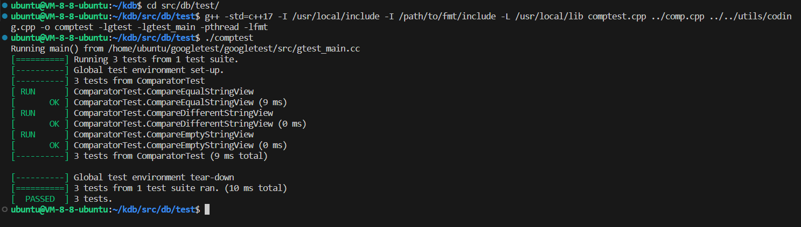
点击返回🔗我的博客文章目录
- 目录 {:toc}
1. 虚拟内存
硬件支持：
现代处理器通过内存管理单元（MMU）支持虚拟内存。虚拟内存将物理内存和存储设备（如硬盘）结合起来，使操作系统和程序可以使用比物理内存更多的空间。处理器中的MMU负责将进程访问的虚拟地址转换为物理地址。
操作系统机制：
操作系统通过页表（Page Table）来维护虚拟地址和物理地址的映射关系。当进程请求的虚拟内存页不在物理内存中时，操作系统会产生“缺页中断”（Page Fault），然后从硬盘中加载相应的页面。
2. 内存管理单元（MMU）
MMU是计算机处理器中的一个硬件模块，它负责虚拟地址到物理地址的转换。在访问内存时，CPU首先生成虚拟地址，MMU将其转换为物理地址，从而访问实际的物理内存。
TLB（Translation Lookaside Buffer）：
MMU中还有一种缓存叫TLB，用来存储虚拟地址到物理地址的映射，避免每次访问内存都进行复杂的页表查找。
3. 内存共享
多个进程可以通过操作系统提供的共享内存机制共享物理内存的同一部分。共享内存是一种高效的进程间通信方式，避免了数据复制。
操作系统支持：
共享内存通常由操作系统提供的系统调用（如shmget和shmat）实现。操作系统允许多个进程通过映射同一段物理内存来共享数据。
4. 堆和栈的内存管理
栈（Stack）：
栈是一种连续的内存区域，常用于存储函数的局部变量和调用信息。栈的内存分配是自动的，当函数调用结束时，栈内存会自动释放。栈空间相对较小，速度快，但存储量有限。
堆（Heap）：
堆用于动态分配内存，程序需要显式分配和释放堆内存（如C语言中的malloc和free）。堆的内存可以不连续，且大小比栈大得多。
5. 缓存管理
硬件缓存：
处理器内部通常有多级缓存（L1、L2、L3），这些缓存用于存储最近访问的内存数据，减少访问主内存的延迟。
软件缓存：
数据库在应用层面也会实现缓存，例如缓冲池（Buffer Pool），用于缓存磁盘中的数据页，减少磁盘I/O操作。
6. 垃圾回收（Garbage Collection）
手动内存管理：
在C/C++中，开发者需要手动管理内存的分配和释放，未能正确释放内存会导致内存泄漏。
自动垃圾回收：
如Java等语言中有自动垃圾回收（GC）机制，GC通过追踪哪些内存块不再被引用来自动回收内存。
7. 内存对齐
CPU访问内存时，通常要求数据按特定字节对齐。例如，32位系统中，4字节的整数应按4字节对齐，64位系统中，8字节的数据应按8字节对齐。
对齐内存访问可以提高访问速度，因为未对齐的访问可能需要多次内存访问。
8. 内存映射I/O
内存映射I/O（Memory-mapped I/O）允许将外部设备（如磁盘）直接映射到进程的地址空间中，从而可以通过内存读写操作访问设备。
操作系统提供系统调用（如mmap），允许将文件或设备映射到内存中，这样文件中的数据就可以像内存一样访问。
9. 内存碎片化
内存碎片：
随着内存的频繁分配和释放，可能会产生内存碎片。外部碎片是未被使用的小块内存，而内部碎片则是已分配但未完全使用的内存。
内存管理技术：
通过内存池、紧凑分配等技术，可以减少内存碎片，提高内存使用效率。
10. 数据库中特定的内存管理技术
MVCC（多版本并发控制）：
MVCC通过存储数据的多个版本来支持并发事务。数据库需要管理不同版本的内存数据，确保旧版本能及时清理，避免内存浪费。
日志管理：
数据库使用Redo Log和Undo Log来管理事务的回滚和恢复，这些日志需要有效的内存管理来确保高效性。
内存表：
有些数据库（如In-Memory数据库）会将数据完全存储在内存中，因此内存管理策略在这类数据库中尤为重要。
点击返回🔗我的博客文章目录
- 目录 {:toc}
大规模数据处理是指对海量数据进行采集、存储、分析和可视化的过程。在此列出常见的大规模数据处理方式，最后探讨MapReduce处理海量数据。
1. 批处理 (Batch Processing)
批处理是一种传统的数据处理方法，适用于需要处理大量数据但不要求实时响应的场景。
典型技术/框架：Hadoop MapReduce、Apache Spark（批处理模式）。
特点： 处理的数据量很大，通常是以整个数据集为单位进行操作。 适用于定期处理，如每日或每周的报表生成。 延迟高，因为必须等待所有数据收集齐全后再开始处理。
应用场景： 日志处理与分析（如日志汇总和错误报告）。 数据仓库构建和ETL（提取、转换、加载）过程。
2. 流处理 (Stream Processing)
流处理（也称为实时处理）用于在数据到达系统时立即处理数据，以支持实时分析和响应。
典型技术/框架：Apache Kafka、Apache Flink、Apache Storm、Apache Spark（流处理模式）、Google Cloud Dataflow。
特点： 数据是连续到达的，处理是增量的。 低延迟，适用于实时数据处理需求。 处理时不会等待所有数据集齐，而是处理每一个到达的数据记录。
应用场景： 实时监控（如金融交易监控、网络安全检测）。 实时推荐系统（如电商实时推荐、社交媒体趋势分析）。
3. 分布式计算 (Distributed Computing)
分布式计算通过将数据和计算任务分散到多个机器或节点上，从而并行处理数据。通常用于大规模数据处理场景。
典型技术/框架：Apache Hadoop、Apache Spark、Dask、Ray。
特点： 处理数据时，数据被划分为多个分片并在不同的节点上并行处理。 具备良好的扩展性和容错性。 适用于需要复杂计算和分析的大数据集。
应用场景： 数据分析和机器学习任务。 大规模图计算和复杂查询（如社交网络分析、基因组数据分析）。
4. 并行处理 (Parallel Processing)
并行处理是通过多个处理器同时执行多个计算任务的方式来加速数据处理。与分布式计算不同，并行处理通常在同一个计算机或多核处理器上进行。
典型技术/框架：多线程编程、OpenMP、MPI、CUDA（用于GPU加速）。
特点： 数据和计算被分解为多个任务，分配到多个处理器/核进行并行计算。 适用于需要高性能计算的任务。 在共享内存架构上表现良好。
应用场景： 科学计算（如气象预测、物理模拟）。 图像处理和视频编码。
5. 内存计算 (In-Memory Computing)
内存计算方法通过将数据和计算任务保存在内存中，以提高数据处理的速度和效率。适用于对响应时间要求较高的场景。
典型技术/框架：Apache Spark、Apache Ignite、Redis、Apache Arrow。
特点： 数据被缓存到内存中，减少了读写磁盘的I/O开销。 处理速度快，延迟低。 通常用于需要快速访问和处理数据的应用。
应用场景： 实时数据分析和决策。 机器学习模型训练和预测。
6. 数据库技术
数据库技术广泛用于存储、查询和分析大规模结构化和非结构化数据。现代数据库系统支持水平扩展和大规模并行处理。
关系型数据库：如 MySQL、PostgreSQL、Oracle（适用于结构化数据存储和查询）。
NoSQL 数据库：如 MongoDB、Cassandra、HBase（适用于半结构化或非结构化数据）。
分布式数据库：如 Google Bigtable、Amazon DynamoDB、CockroachDB。
数据仓库：如 Amazon Redshift、Google BigQuery、Snowflake。
7. 云计算 (Cloud Computing)
云计算利用云平台提供的大规模计算和存储能力，支持大数据处理和分析。
典型平台：Amazon Web Services (AWS)、Google Cloud Platform (GCP)、Microsoft Azure。
特点： 提供弹性扩展和按需资源分配。 减少了维护物理硬件的成本。 支持多种大数据工具和服务（如Amazon EMR、Google BigQuery）。
应用场景： 分析即服务（Analytics as a Service）。 大数据分析和人工智能（AI）应用。
8. MapReduce处理大规模数据
MapReduce 结合了 批处理 和 分布式计算 的特点。 批处理特点：MapReduce 通过将数据集分成块（split）并行处理，然后对中间结果进行合并，最终输出处理结果。 分布式计算特点：MapReduce将数据和计算任务分散到集群中的多个节点上，利用多台机器的计算能力来并行处理数据。
9. 选择MapReduce处理大规模数据的原因
9.1 数据分布式处理
MapReduce是为分布式计算而设计的。它将大数据集分割成更小的片段，这些片段可以分布在集群中的多个节点上并行处理。在MapReduce模型中，Map和Reduce任务在不同的机器上独立运行，这种分布式处理能力使得它可以处理非常大的数据集。
9.2 数据本地化
MapReduce通过数据本地化策略优化了数据处理过程。在大数据处理中，数据的移动成本非常高昂。MapReduce框架尽量将计算任务调度到数据所在的节点上运行，减少了数据在网络中的传输。这种策略提高了处理效率并降低了数据传输的开销。
9.3 自动化的任务调度和负载均衡
MapReduce框架能够自动调度任务并均衡负载。它将大数据集拆分成多个小任务，并将这些任务分配给不同的计算节点。框架会动态监控每个节点的负载和性能，并调整任务分配以均衡整个集群的负载。这种自动化的任务调度和负载均衡能力能够充分利用集群资源，从而提高处理效率。
9.4 容错和恢复机制
在处理TB级甚至PB级数据时，不可避免地会遇到硬件故障或任务失败。MapReduce框架内置了容错机制：当一个任务失败时，框架会自动检测到并在另一个节点上重新调度该任务。这种容错性确保了即使在大规模集群中，单个节点的故障也不会导致整个任务的失败。
9.5 扩展性
MapReduce具有良好的水平扩展性。可以通过增加更多的计算节点（服务器）来提高处理能力。随着数据量的增加，只需添加更多的节点即可处理更大的数据集。
9.6 并行化计算
MapReduce的核心思想是将计算任务分解成可以并行执行的多个独立子任务。Map阶段的每个任务可以并行执行，同样，Reduce阶段的任务也可以并行处理。
9.7 中间数据优化
在Map阶段和Reduce阶段之间，MapReduce框架对中间数据进行了优化处理，包括“洗牌（Shuffle）”和“排序（Sort）”过程。